6 Colour and emphasis
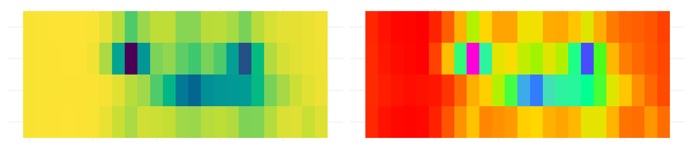
Chapter 5 was about taking things out. This chapter is about what’s left, and which part of it a reader meets first.
A plot where everything has equal weight has no first, second or third, so the reader has to do the ranking themselves.
You’re spending their attention whether you decide to or not.
Overview
Duration 50 minutes
Questions
- How do I get emphasis for free?
- How do I choose colours that every reader can tell apart?
- How do I make one group stand out against the others?
What you need this session
- A session of RStudio open
- Something to draw on, and something to draw with
- The following packages installed
pedestrian_hourly <- pedestrian |>
mutate(day_type = if_else(
condition = str_starts(week_day, "S"),
true = "weekend",
false = "weekday"
)
) |>
group_by(sensor_name, day_type, hour) |>
summarise(
mean_count = mean(hourly_counts, na.rm = TRUE),
.groups = "drop"
)
sensor_totals <- pedestrian |>
group_by(sensor_name) |>
summarise(total = sum(hourly_counts, na.rm = TRUE))6.1 Order is free emphasis
The idea: the order of your categories is a decision. If you don’t make it, the alphabet makes it for you.
Our four sensors have been alphabetical since Chapter 4.
# A tibble: 4 × 2
sensor_name total
<chr> <int>
1 Bourke Street Mall (South) 10053301
2 Flagstaff Station 7803769
3 Birrarung Marr 3974341
4 Spencer St-Collins St (South) 2837121Alphabetical order puts the third busiest first and the busiest second. The letter B is doing work that traffic should be doing.
One function, and the plot went from a lookup table to a ranking.
The same works on facets, so the panels read in order:
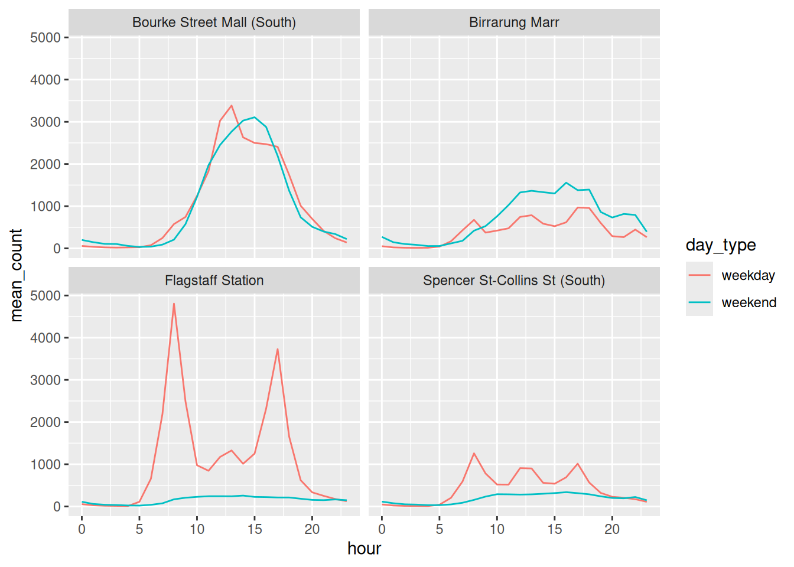
Sorting is usually a good idea. Not always:
- sort when the reader is comparing
- don’t sort when the reader is looking something up
A phone book sorted by height would be a nightmare.
library(tidyverse)
library(naniar)
library(colorspace)
library(gghighlight)
library(ggrepel)
library(patchwork)
pedestrian_hourly <- pedestrian |>
mutate(day_type = if_else(
condition = str_starts(week_day, "S"),
true = "weekend",
false = "weekday"
)
) |>
group_by(sensor_name, day_type, hour) |>
summarise(
mean_count = mean(hourly_counts, na.rm = TRUE),
.groups = "drop"
)
sensor_totals <- pedestrian |>
group_by(sensor_name) |>
summarise(total = sum(hourly_counts, na.rm = TRUE))Add
fct_rev()around thefct_reorder(). Which direction reads better for a horizontal bar chart?Sort the facets by weekend traffic instead of overall traffic:
Does the story change?
fct_infreq()sorts by how often a value appears. When would you want that instead offct_reorder()?
Only open this if you’ve actually had a go.
1. fct_rev() puts the biggest at the top. For a horizontal bar chart I prefer that, because English readers start top left and the most important bar is the first thing they meet.
2. filter(day_type == "weekend") then fct_reorder(sensor_name, mean_count). The order changes: Birrarung Marr climbs, because a park is a weekend place.
3. fct_infreq() counts rows, so use it when the thing you care about is how often a category turns up. Bar charts of raw counts, mostly.
Takeaways
- Alphabetical is not an order, it’s the absence of one
fct_reorder()on a variable your reader cares about is the cheapest emphasis available- Sort for comparison, don’t sort for lookup
6.2 Colour that carries meaning
The idea: colour is the channel most likely to fail silently. It can look fine to you and be unreadable to one reader in twelve.
Here’s our four sensors in ggplot2’s default colours.
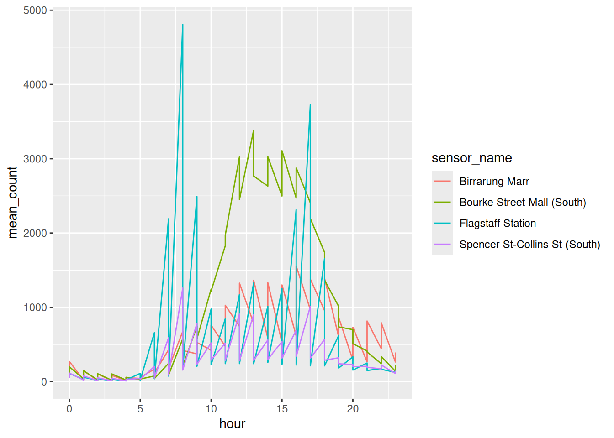
Note the filter(). pedestrian_hourly holds a weekday and a weekend row for every hour, so colouring by sensor alone gives each line two values per hour and it sawtooths, as in Chapter 2. One kind of day is enough to talk about colour, so keep those rows in their own object. Everything from here uses it:
Those four colours arrived for free, so it’s worth looking at them properly. swatchplot() from colorspace draws a palette as blocks of colour, and cvd = TRUE adds a row for each kind of colour vision deficiency, plus a desaturated row for anyone reading a black and white printout.
Read down a column to see what one colour turns into. Read across the Deuteranope row, the commonest kind, and the first two blocks are both olive and the last two are both blue. Four colours went in, two came out.
Side by side, with the legends off so it’s just the lines:
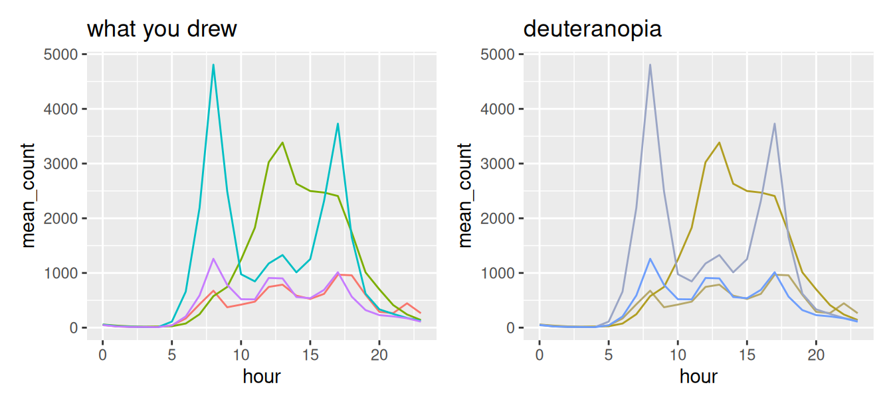
That’s patchwork, which puts two plots next to each other with +. Half the information is gone. This is roughly 8% of men of northern European descent, and about 0.5% of women.
And the palette you were about to reach for has the same problem. Dark2 is the one everyone moves to next. Put the two of them next to viridis, in one grid, and you can see which one survives:
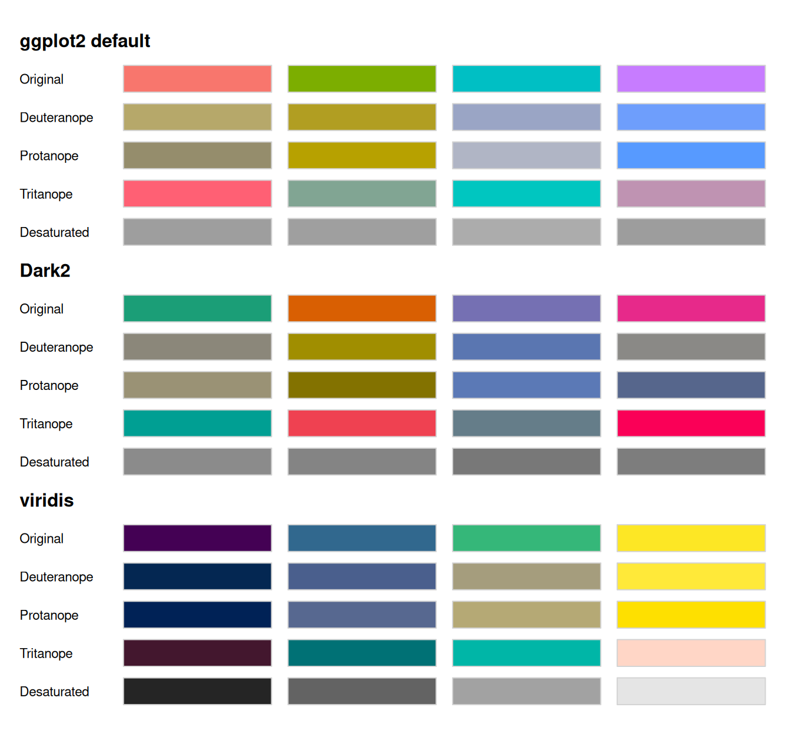
- ggplot2 default: two olives and two blues
- Dark2: the first and fourth collapse to near identical greys
- viridis: four blocks you can still tell apart, in every row
The Desaturated row is the quickest test in the grid. Viridis survives it because it varies lightness as well as hue: on a 0 to 100 lightness scale its four colours span 76 points, where the ggplot2 default spans 6 and Dark2 spans 8.
A palette that survives a black and white photocopier will survive most eyes.
“Varies lightness” isn’t a matter of opinion, it’s something you can plot. specplot() pulls a palette apart into the three things a colour actually is: hue, which colour it is; chroma, how saturated it is; and luminance, how light it is.
The blue luminance line is the whole argument. Viridis climbs from dark to light in a near straight line, so the palette keeps an order even with the colour taken away. The ggplot2 default sits flat at about 65 the whole way across: every hue you like, all at the same brightness.
Three more from colorspace that want a live R session, so they aren’t run here:
hcl_wizard()opens a Shiny app for building a palette by dragging hue, chroma and luminance around, with the CVD simulations updating as you go, and hands you the hex codes at the end. It also lives at hclwizard.org if you’d rather not run it locally.cvd_emulator()takes a jpg or png, a screenshot of a plot a colleague sent you, say, and re-renders it as protanope, deuteranope and desaturated. Useful when you can’t get at the code.choose_color()is the same idea for a single colour, with sliders for hue, chroma and luminance.
Our four lines again, in viridis:
Match the palette to the variable
Most bad colour is a type mismatch. There are three kinds of palette, and each one answers a different kind of question:
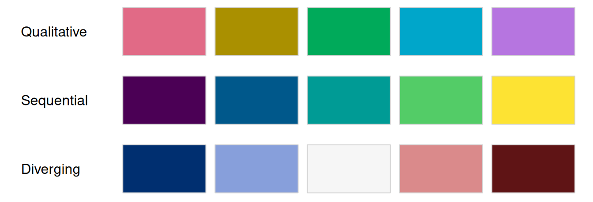
- qualitative for unordered categories, like our four sensors. Hue changes, lightness stays put, so no category looks more important than another.
- sequential for magnitude, like a count. Lightness runs one way.
- diverging for distance from a midpoint, like above and below average. Two sequential palettes back to back, meeting at a neutral middle.
colorspace ships a ggplot2 scale for every combination of those, and the names are built out of one rule:
scale_<aesthetic>_<datatype>_<colourscale>()
| piece | what goes there |
|---|---|
| aesthetic | colour, color, fill |
| datatype | discrete, continuous, binned |
| colourscale | qualitative, sequential, diverging, divergingx |
So scale_fill_continuous_sequential() is a fill, for a number, using a sequential palette. That’s 36 functions you never have to look up. Say what you’re colouring, what kind of variable it is, and what kind of palette you want, and the name assembles itself.
The last two want a plot that can carry a magnitude, so here is the same weekday data as tiles, one row per sensor and one column per hour:
Same data, three questions, three palettes. And a fourth tab for what a mismatch looks like.
Which sensor is this? Nothing is ranked, so nothing shouts.
How busy? Dark is more and light is less, so the two commuter peaks at Flagstaff Station show up without going to the legend.
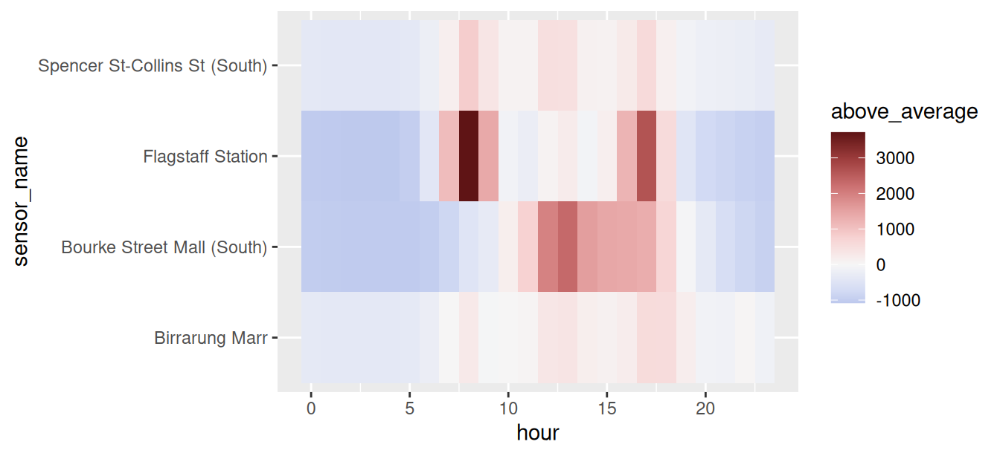
Busier or quieter than usual? White is that sensor’s own average, red is above it, blue is below. The 8am and 5pm commute at Flagstaff Station is the darkest thing on the plot.
A swatch tells you the colours are different. It doesn’t tell you how they behave once they’re spread over a real plot, in small pieces, sitting next to each other. demoplot() paints a palette into a fake plot so you can judge that before you go anywhere near your own data.
par(mfrow = c(1, 3), mar = c(1, 1, 3, 1))
demoplot(qualitative_hcl(5, palette = "Dark 3"), type = "bar")
title("qualitative / bar")
demoplot(sequential_hcl(5, palette = "Viridis"), type = "heatmap")
title("sequential / heatmap")
demoplot(diverging_hcl(5, palette = "Blue-Red 3"), type = "map")
title("diverging / map")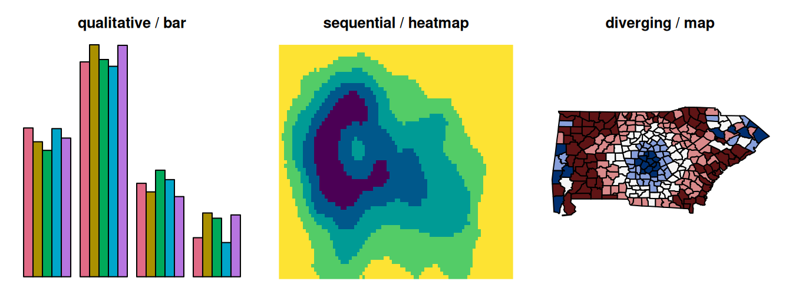
There are nine types to choose from: "map", "heatmap", "scatter", "spine", "bar", "pie", "perspective", "mosaic" and "lines". Pick whichever is closest to the plot you’re actually making.
It pairs with the simulators. Put the palette through deutan() or desaturate() first, and demoplot draws what that reader gets:
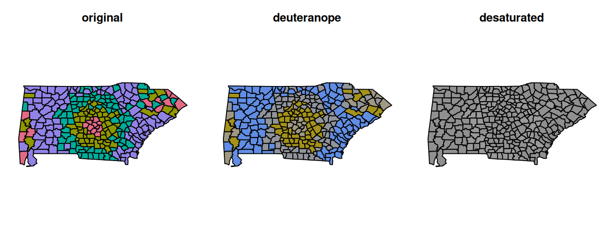
Under deuteranopia the pink and the teal both drift towards grey, and desaturated the map is one colour. That is what a qualitative palette is: hue does all the work. These four colours span 4 points of lightness, against viridis’s 76, so there’s nothing left to fall back on.
Which is the argument for the next section. If a reader might print your plot in black and white, or you have more than a handful of categories, you’re better off highlighting one series than colouring all of them.
More on checking a palette before you commit to it, in Quickly Assessing Colour Palettes.
prismatic::check_color_blindness() is the same idea as swatchplot(cvd = TRUE), from a different package, if you’d rather one call than two arguments.
I gave a talk at Monash Data Fluency on how colour vision actually works and what follows from it for graphics: The Use of Colour in Graphics, slides and resources.
And if you want to know where viridis came from, the talk that produced it is A Better Default Colormap for Matplotlib by Nathaniel Smith and Stéfan van der Walt, SciPy 2015. Half an hour, and you’ll never look at a rainbow scale the same way.
hour is none of the three types. Midnight is next to 23:00, so a sequential palette puts the two closest hours at opposite ends of the scale.
There’s no good default for this. The three way taxonomy is useful and it isn’t the whole story.
library(tidyverse)
library(naniar)
library(colorspace)
library(gghighlight)
library(ggrepel)
library(patchwork)
pedestrian_hourly <- pedestrian |>
mutate(day_type = if_else(
condition = str_starts(week_day, "S"),
true = "weekend",
false = "weekday"
)
) |>
group_by(sensor_name, day_type, hour) |>
summarise(
mean_count = mean(hourly_counts, na.rm = TRUE),
.groups = "drop"
)
sensor_totals <- pedestrian |>
group_by(sensor_name) |>
summarise(total = sum(hourly_counts, na.rm = TRUE))
pedestrian_weekday <- pedestrian_hourly |>
filter(day_type == "weekday")
p_tiles <- ggplot(pedestrian_weekday,
aes(x = hour,
y = sensor_name,
fill = mean_count)) +
geom_tile()Put a palette you use at work through
swatchplot(cvd = TRUE). Does it survive the Deuteranope row? Does it survive the Desaturated one?Compare two more brewer palettes in one grid:
Better or worse than Dark2?
- Colour
p_tilesbymean_countwith a qualitative palette,scale_fill_discrete_qualitative(). You should get an error. What is ggplot2 telling you about the variable?
Only open this if you’ve actually had a go.
2. Set1 holds up better than Dark2, because its colours differ in lightness as well as hue: they span 19 points of lightness against Dark2’s 8. Set2 is pastel, spans 6, and collapses badly.
3. Error: Continuous value supplied to a discrete scale. A discrete scale wants a discrete variable, and mean_count is a number. This is the one type mismatch ggplot2 catches for you. It has nothing to say about rainbow().
Takeaways
- The default palette fails under colour vision deficiency, and so does Dark2
- Palettes that vary lightness survive, which is why viridis is the safe default
- Look at a palette with
swatchplot(cvd = TRUE)rather than guessing from hex codes - Qualitative for categories, sequential for magnitude, diverging for distance from a midpoint
6.3 Emphasis by contrast
The idea: four colours asks the reader to rank four things. Usually you want them to look at one.
Grey is not an absence of colour. It’s a demotion, and you do it on purpose.
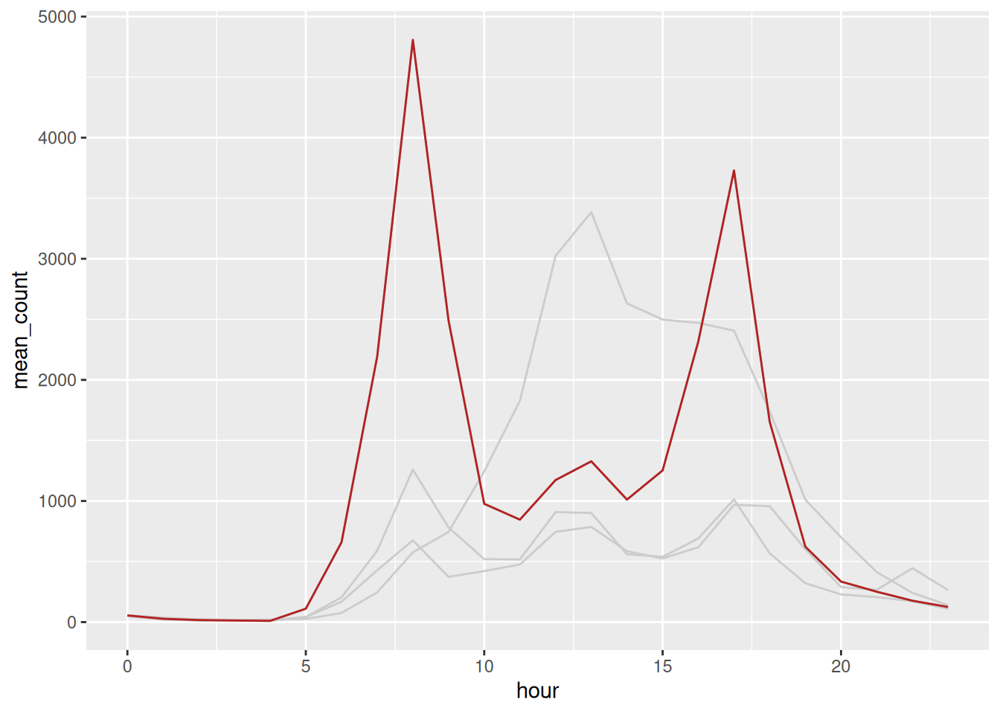
Two geom_line() calls, one of them filtered. gghighlight() from Chapter 5 does the same job in one line, and it’s worth having seen the manual version so it isn’t magic.
Then get rid of the legend by putting the label on the line.
sensor_labels <- pedestrian_hourly |>
filter(day_type == "weekday") |>
group_by(sensor_name) |>
slice_max(hour, n = 1)
p_sensors +
geom_text_repel(data = sensor_labels,
aes(label = sensor_name),
hjust = 0,
direction = "y",
nudge_x = 1) +
theme(legend.position = "none") +
coord_cartesian(xlim = c(0, 32))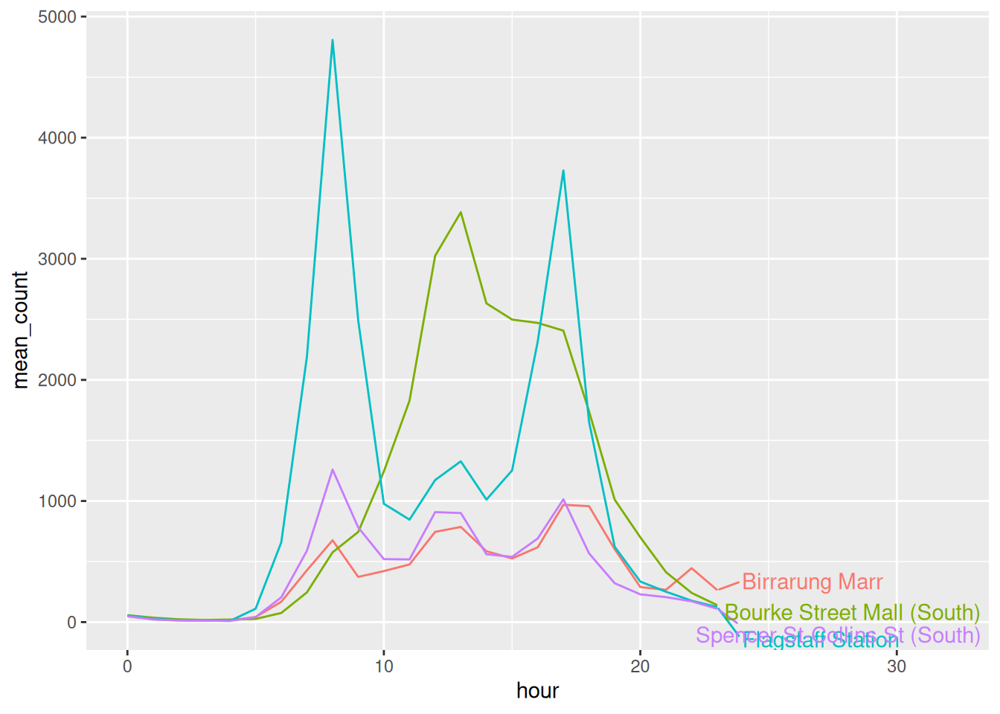
A legend makes the eye bounce between the key and the plot, once per series. A label sits where the thing is.
library(tidyverse)
library(naniar)
library(colorspace)
library(gghighlight)
library(ggrepel)
library(patchwork)
pedestrian_hourly <- pedestrian |>
mutate(day_type = if_else(
condition = str_starts(week_day, "S"),
true = "weekend",
false = "weekday"
)
) |>
group_by(sensor_name, day_type, hour) |>
summarise(
mean_count = mean(hourly_counts, na.rm = TRUE),
.groups = "drop"
)
sensor_totals <- pedestrian |>
group_by(sensor_name) |>
summarise(total = sum(hourly_counts, na.rm = TRUE))
pedestrian_weekday <- pedestrian_hourly |>
filter(day_type == "weekday")
ggplot(pedestrian_weekday,
aes(x = hour,
y = mean_count,
group = sensor_name)) +
geom_line(colour = "grey80") +
geom_line(data = filter(pedestrian_weekday,
sensor_name == "Flagstaff Station"),
colour = "firebrick")- Put the two colours in the greyed plot through the simulator:
Does the contrast survive better than four categorical hues did?
- Highlight a different sensor:
gghighlight warns about a group_by() calculation falling back. The plot is fine.
- If the question were “where is busy on a weekend”, which sensor would you highlight? Is that the same answer you gave in Chapter 4?
Only open this if you’ve actually had a go.
1. Yes. Every row keeps a pale block and a dark one, the desaturated row included, because grey against one colour is a lightness difference and lightness is what survives. This is the strongest argument there is for highlighting one series over colouring four.
3. Birrarung Marr, because it’s the only sensor where the weekend beats the weekday. Same answer as Chapter 4, which is a good sign: the emphasis should follow the finding, not replace it.
Takeaways
- Grey is a decision, not a default
- Highlight one series rather than colouring four
- A direct label beats a legend, because the reader stops travelling
The highlight told the reader where to look. It did not tell them what they were looking at.
peak <- pedestrian_weekday |>
filter(sensor_name == "Flagstaff Station") |>
slice_max(mean_count, n = 1)
ggplot(pedestrian_weekday,
aes(x = hour,
y = mean_count,
group = sensor_name)) +
geom_line(colour = "grey80") +
geom_line(data = filter(pedestrian_weekday,
sensor_name == "Flagstaff Station"),
colour = "firebrick") +
geom_point(data = peak, colour = "firebrick", size = 2) +
geom_text_repel(data = peak,
aes(label = "Flagstaff, 8am"),
nudge_y = 400,
colour = "firebrick") +
scale_y_continuous(labels = scales::label_comma()) +
labs(x = "Hour", y = NULL) +
theme_minimal()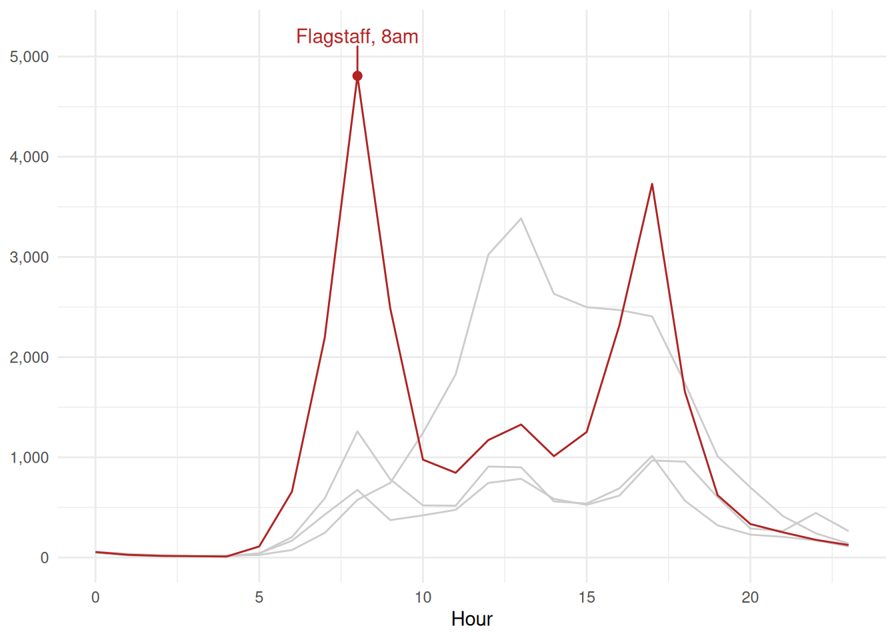
- Annotate the one point you are talking about. A highlighted line says “this one”. A label says why.
- Match the annotation colour to the thing. The label is the same red as the line, so nothing has to be traced.
- Drop the y title.
mean_countwas never doing any work, and the comma formatted numbers say what they are.
6.4 To summarise
Three things to take out of this chapter.
- Order is free emphasis.
fct_reorder()costs one function and turns a lookup table into a ranking. - Colour fails silently. Look at it with
swatchplot(cvd = TRUE), prefer palettes that vary lightness, and match the kind of palette to the kind of variable. - Grey is a decision. Highlight the one series you’re talking about, demote the rest, and put the label on the line rather than in a legend.
And the habit: before you style anything, decide what you want the reader to see first. Then make that the loudest thing on the page and demote everything else.
Next up is the last mile: labels, themes, and getting a file out that looks the way it did on your screen.